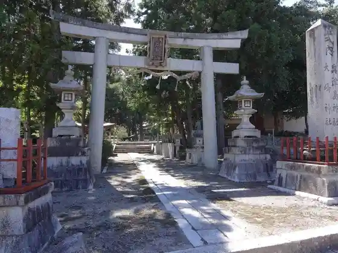
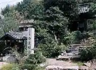
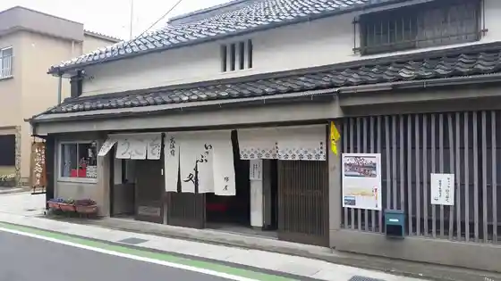
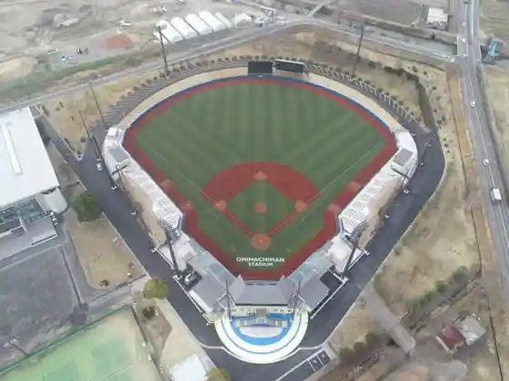

Oshima Okitsushima Shrine
Omihachiman, Shiga · Official / source link

Reisen Tera
Omihachiman, Shiga · 0748-37-7680 · Official / source link

Musa Yado Ato
Omihachiman, Shiga · 0748-33-6061 · Official / source link

Omihachiman Ritsu Sports Park
Omihachiman, Shiga · Official / source link

Omihachiman Ritsu Museum (Kyunishi Kawa Ie House)
Omihachiman, Shiga · 0748-32-7048 · Official / source link
Fukuju Tera
Omihachiman, Shiga · 0748-37-0688 · Official / source link
Sasaki Shrine
Omihachiman, Shiga · 0748-46-3564 · Official / source link
Kyuka Village Omihachiman
Omihachiman, Shiga · 0748-32-3138 · Official / source link
Oda Shrine
Omihachiman, Shiga · 0748-32-6835 · Official / source link
Ishi no Tera Kyo Hayashi Bo
Omihachiman, Shiga · 0748-46-5400 · Official / source link
Guriin Hotel Yes Omihachiman
Omihachiman, Shiga · 0748-32-8180 · Official / source link
Miyamae
Omihachiman, Shiga · 0748-33-0150 · Official / source link
Andoryusu Memorial Museum
Omihachiman, Shiga · 0748-32-2456 · Official / source link
Yoshida Etsuzo Tei (Ken Shitei Bunkazai Vorizu Kenchiku)
Omihachiman, Shiga · Official / source link
Nishi no Mizumi Meguri
Omihachiman, Shiga · 0748-46-6960 · Official / source link
Vorizu Memorial Museum
Omihachiman, Shiga · 0748-32-2456 · Official / source link
Hachiman Sha
Omihachiman, Shiga · 0748-36-5573 · Official / source link
Azuchi Castle Ruins
Omihachiman, Shiga · 0748-46-6594 · Official / source link
Daichu Kakimi Ichigo Sono
Omihachiman, Shiga · 0748-32-1231 · Official / source link
Okayama Castle Ruins
Omihachiman, Shiga · 0748-36-5573 · Official / source link
Mizukuki Yaki Togei Village
Omihachiman, Shiga · 0748-33-1345 · Official / source link
Suigo Meguri
Omihachiman, Shiga · 0748-33-6061 · Official / source link
Kyu Iba Ie House
Omihachiman, Shiga · 0748-46-6324 · Official / source link
Omi Kyodai Sha Mentamu Museum
Omihachiman, Shiga · 0748-32-3131 · Official / source link
Kyu Hachiman Yubinkyoku (Vorizu Kenchiku)
Omihachiman, Shiga · 0748-33-6521 · Official / source link
Kyu Han Ie House (Hachiman Kyoiku Hall)
Omihachiman, Shiga · 0748-32-1877 · Official / source link
Oku Ishi Shrine
Omihachiman, Shiga · 0748-46-2481 · Official / source link
Nishikawa Kaemon Shoten
Omihachiman, Shiga · 0748-32-2177 · Official / source link
KK Suigo no Sato
Omihachiman, Shiga · Official / source link
JR Eki Rentaka Omihachiman Eigyosho
Omihachiman, Shiga · 0748-32-1134 · Official / source link
Kamo Shrine
Omihachiman, Shiga · 0748-33-0123 · Official / source link
Kyuka Village Omihachiman Campground
Omihachiman, Shiga · Official / source link
Omi Ushi Kane Yoshiyama Hon
Omihachiman, Shiga · 0748-33-3355 · Official / source link
Nagamitsu Tera Castle Ruins
Omihachiman, Shiga · 0748-36-5573 · Official / source link
Hachiman Hori
Omihachiman, Shiga · 0748-33-6061 · Official / source link
Yahatayama Ropue (Biwako Kokutei Park)
Omihachiman, Shiga · 0748-32-0303 · Official / source link
Hotel Nyuomi
Omihachiman, Shiga · 0748-36-6666 · Official / source link
Ganjo Shu Tera
Omihachiman, Shiga · 0748-33-4367 · Official / source link
Jo Gen In
Omihachiman, Shiga · 0748-46-2242 · Official / source link
Nichi Mure Hachiman Shrine
Omihachiman, Shiga · 0748-32-3151 · Official / source link
Iwato Yama Jusan Hotoke
Omihachiman, Shiga · 0748-46-4234 · Official / source link
Omihachiman Ritsu Museum (Local History Museum)
Omihachiman, Shiga · 0748-32-7048 · Official / source link
TOYOTA SHARE Toyotarentaka Omihachiman Mise
Omihachiman, Shiga · 0800-666-2077 · Official / source link
Omihachiman Ritsu Museum (Folk History Museum)
Omihachiman, Shiga · 0748-32-7048 · Official / source link
Saiko Tera
Omihachiman, Shiga · 0748-32-3721 · Official / source link
Going Nuts!
Omihachiman, Shiga · Official / source link
Shingonshu Nagamitsu Tera
Omihachiman, Shiga · Official / source link
Zuiryu Tera (Mura Kumo Gosho)
Omihachiman, Shiga · 0748-32-3323 · Official / source link
Sen So Tomo Kofun Gun
Omihachiman, Shiga · 0748-37-6121 · Official / source link
Yahatayama Castle Ruins
Omihachiman, Shiga · 0748-33-6061 · Official / source link
Bungei Seminariyo
Omihachiman, Shiga · Official / source link
Shima Shinju Suigo Kankosen
Omihachiman, Shiga · 0748-32-3527 · Official / source link
Reauddobiizu Miki
Omihachiman, Shiga · 0748-33-5251 · Official / source link
Koshu Doro (Chomei Tera Shuhen)
Omihachiman, Shiga · 0748-32-7003 · Official / source link
Seminariyo Ato
Omihachiman, Shiga · 0748-46-4234 · Official / source link
JR Omihachiman Eki
Omihachiman, Shiga · Official / source link
Biwa Mizumi Kanko
Omihachiman, Shiga · 0748-32-2131 · Official / source link
Umami Oka Shrine
Omihachiman, Shiga · 0748-36-5573 · Official / source link
Go Fune Kannon Myoho Tera (Hachiman Hori Kanko Kyukei)
Omihachiman, Shiga · 0748-26-1353 · Official / source link
Kuwa Jitsu Tera (Kuwa Mine Kusurishi)
Omihachiman, Shiga · 0748-46-2560 · Official / source link
Hachiman Kutsu no Wafu Resutoran Hama Gura
Omihachiman, Shiga · 0748-32-5533 · Official / source link
Azuchijo Kaku Museum
Omihachiman, Shiga · 0748-46-5616 · Official / source link
Mizukuki Yaki Kaferesutoran
Omihachiman, Shiga · Official / source link
Uotahausu Memorial Museum
Omihachiman, Shiga · Official / source link
Enman Tera (Omihachiman)
Omihachiman, Shiga · 0748-36-5573 · Official / source link
Bodaresu Ato Museum NO-MA
Omihachiman, Shiga · 0748-36-5018 · Official / source link
Honganji Hachiman Betsuin (Kin Dai Tera)
Omihachiman, Shiga · 0748-33-2466 · Official / source link
Hakun Kan (Kyu Yahatahigashi Gakko)
Omihachiman, Shiga · Official / source link
Chomei Tera
Omihachiman, Shiga · 0748-33-0031 · Official / source link
Azuchi Marieto
Omihachiman, Shiga · Official / source link
Biwa Paru Saiki Sangyo
Omihachiman, Shiga · Official / source link
Omihachiman Wasen Kanko Kyodokumiai (Suigo Meguri)
Omihachiman, Shiga · Official / source link
Oki Shima
Omihachiman, Shiga · 0748-33-9779 · Official / source link
Hachiman Park
Omihachiman, Shiga · 0748-36-5573 · Official / source link
Shiga Prefectural Azuchijo Koko Museum
Omihachiman, Shiga · 0748-46-2424 · Official / source link
Omi Shonin no Streetscape (Shin Town Tori)
Omihachiman, Shiga · 0748-32-7048 · Official / source link
Omihachiman Culture Hall
Omihachiman, Shiga · 0748-33-8111 · Official / source link
Omi Fudoki no Oka
Omihachiman, Shiga · 0748-46-2424 · Official / source link
Kannon Sei Tera
Omihachiman, Shiga · 0748-46-2549 · Official / source link
Azuchijo Tenshu Nobunaga no Kan
Omihachiman, Shiga · 0748-46-6512 · Official / source link
Nishikawa Jingoro Honten Shiryo Kan
Omihachiman, Shiga · 0748-32-2909 · Official / source link
Hyotan Yama Burial Mound
Omihachiman, Shiga · 0748-46-4234 · Official / source link
Kawara Museum
Omihachiman, Shiga · 0748-33-8567 · Official / source link
Haido Memorial Museum
Omihachiman, Shiga · Official / source link
Nagamitsu Tera (Hana no Kitera)
Omihachiman, Shiga · Official / source link
Kannon Tera Castle Ruins
Omihachiman, Shiga · 0748-46-4234 · Official / source link
Hikiyama to I Kusa no Kan
Omihachiman, Shiga · 0748-33-0559 · Official / source link
Toyotarentariisu Shiga Omihachiman Mise
Omihachiman, Shiga · 0748-38-1000 · Official / source link
JR Azuchi Eki
Omihachiman, Shiga · Official / source link
Fuku Yuki Shima Benzaiten
Omihachiman, Shiga · 0748-46-4234 · Official / source link
Miyagahama Suiei Ba
Omihachiman, Shiga · 0748-32-3138 · Official / source link
Omihachiman Yakusho
Omihachiman, Shiga · 0748-33-3111 · Official / source link